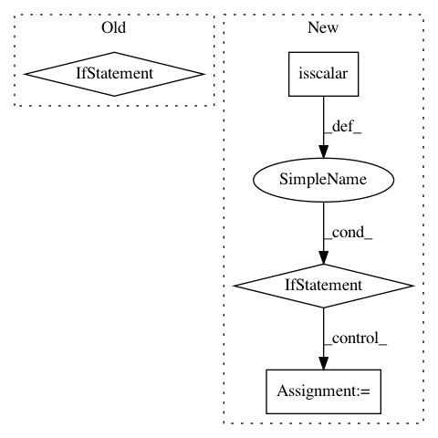

9748b1dc29f7a5bcfb1eef8f3ecbb1e508ae1ca5,prody/dynamics/signature.py,,showMatrixAverageCrossCorr,#Any#Any#Any#,243
Before Change
import matplotlib.pyplot as plt
if SETTINGS["auto_show"]:
plt.figure()
C, mean, std = calcAverageCrossCorr(modesEnsemble, modeIndex)
if plotStd:
matrixData = std
else:
After Change
kwargs["origin"] = "lower"
cmap = kwargs.pop("cmap", "jet")
show = showMatrix(matrixData, cmap=cmap, *args, **kwargs)
if np.isscalar(modeIndex):
title_str = ", mode "+str(modeIndex+1)
else:
// modeIndexStr = ",".join([str(x+1) for x in modeIndex])
// if len(modeIndexStr) > 8:
// title_str = ", "+str(len(modeIndex))+" modes "+modeIndexStr[:5]+"..."
// else:
// title_str = ", modes "+modeIndexStr
title_str = ", "+str(len(modeIndex))+" modes"
if plotStd:
plt.title("Std - Cross-correlations"+title_str, size=12)
else:
plt.title("Avg - Cross-correlations"+title_str, size=12)
In pattern: SUPERPATTERN
Frequency: 4
Non-data size: 4
Instances
Project Name: prody/ProDy
Commit Name: 9748b1dc29f7a5bcfb1eef8f3ecbb1e508ae1ca5
Time: 2018-02-16
Author: hongchun@pitt.edu
File Name: prody/dynamics/signature.py
Class Name:
Method Name: showMatrixAverageCrossCorr
Project Name: scipy/scipy
Commit Name: e952a94737dc1bbd30a15c390c2c17899bdc0a47
Time: 2015-07-28
Author: n59_ru@hotmail.com
File Name: scipy/optimize/_numdiff.py
Class Name:
Method Name: group_columns
Project Name: scikit-image/scikit-image
Commit Name: 799a21efa211907c19d3afdd611ac7d70774f462
Time: 2016-09-06
Author: gregory.lee@cchmc.org
File Name: skimage/restoration/_denoise.py
Class Name:
Method Name: _wavelet_threshold
Project Name: prody/ProDy
Commit Name: 86ce7f9e7db046d0bbf2a4aef50cabd4731167e6
Time: 2018-04-30
Author: shz66@pitt.edu
File Name: prody/utilities/catchall.py
Class Name:
Method Name: showMatrix